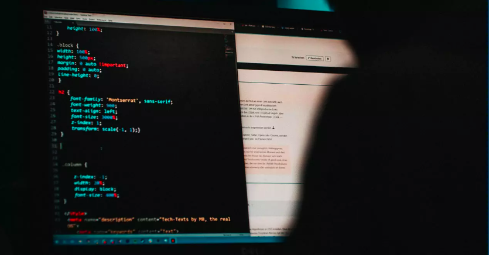
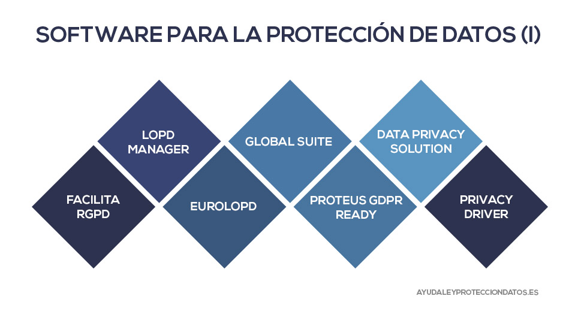

El pasado 11 de octubre, Grupo SUMMAA Energía S.A. de C.V., empresa mexicana con 25 años en el mercado y especializada en ingeniería eléctrica, principalmente en factor de potencia, fue víctima de uno de los chantajes más populares en nuestra época: los ciberataques”.
Actualmente, todas las empresas y organizaciones guardan sus datos de manera digital. La forma de comunicación es a través de sistemas y redes que facilitan las operaciones internas y externas de ésta. Sin embargo, a medida en que las facilidades crecen, también lo hacen los peligros y estos ataques se han vuelto cada vez más creativos.
A pesar de que los ciberataques no son algo nuevo, se han vuelto cada vez más recurrentes en los últimos años. Desde que la pandemia nos obligó a confinarnos, varias compañías han sido target de una extorsión: hackers invaden los sistemas y bases de datos de las empresas, los secuestran, encriptan la red interna y finalmente exigen un rescate para liberar la información. En caso de que se les niegue el pago, la empresa corre el riesgo de que sus datos sean vendidos a la competencia, publicados en Internet o eliminados por completo.
Esta vez no fue una excepción. En entrevista, el encargado de sistemas de SUMMA y licenciado en informática, Hiram Suárez, explicó que a pesar de no saber con exactitud por dónde es que los ciberdelincuentes accedieron a la base de datos, es una realidad que las empresas se han vuelto más vulnerables ya que, a raíz de la pandemia, se abrieron muchos accesos remotos para los empleados que hacen home office.
Narra que, con lo primero con lo que se encontraron, fue una pantalla con un mensaje por parte de los hackers: todos los datos de su empresa han sido encriptados y para recuperarlos les exigen hacer una transferencia en bitcoins, en este caso era por una cantidad de 7 mil quinientos dólares.
“El dinero es variable, va dependiendo del número de máquinas que están comprometidas, lo piden en bitcoins para que la transferencia sea imposible de rastrear e incluso incluyen en sus correos una lista de páginas web donde se puede comprar esta criptomoneda”, aclaró.
Lo prometido es que una vez que la transacción esté hecha, envían un programa que escanea el sistema y proporciona una contraclave que desencripta todo. A primera instancia la empresa no respondió, por lo que los ciberdelincuentes, siempre comunicándose por correo electrónico, demuestran su control y poder al pedir que envíen un pequeño pedazo de la información, el cual ellos regresan desencriptada para que “vean que sí funciona”. A partir de ese momento les dan una fecha límite para pagar y recuperar sus datos, siempre bajo la amenaza de eliminarlo todo si denuncian o intentan resolverlo por sus propios métodos.
El correo por el que se comunican normalmente es de hotmail o gmail, los cuales pueden crearse y eliminarse en cualquier momento. En este caso el dominio era paybackformistake@qq.com utilizando el nombre de “Alicia García”.
“El hackeo se origina al buscar comprometer los dispositivos digitales, como ordenadores, teléfonos inteligentes, tabletas e incluso redes enteras. Aunque el hackeo puede no tener siempre fines maliciosos, actualmente la mayoría de las referencias tanto al hackeo como a los hackers, se caracterizan como actividad ilegal por parte de los ciberdelincuentes, motivados por la obtención de beneficio económico, por protesta, recopilación de información (espionaje), e incluso sólo por la “diversión” del desafío”, estableció Hiram. “También pueden utilizar la psicología para engañar al usuario y que este haga clic en un archivo adjunto malicioso o proporcione sus datos personales. Estas tácticas se conocen como “ingeniería social”, agregó.
SUMMAA se negó a pagar y los hackers, en vez de eliminar todo al pasar la fecha límite, decidieron reducir el rescate a cuatro mil quinientos dólares. Aún así la empresa no cedió. “No negociamos con personas que utilizan sus habilidades para hacer el mal a la sociedad”, dijo el dueño de Grupo SUMMAA, Francisco Antonio Martínez Peraza.
A diferencia de lo que experimentan muchas empresas, esta pesadilla cibernética en particular tuvo un final feliz. “Nuestra solución fue resolverlo por medios propios, ya que contábamos con los respaldos de la información que secuestraron. Caso contrario, habríamos tenido que acceder al pago. Aun así, no hemos logrado recuperar la información en su totalidad, hay parte que sigue encriptada”, agregó Suárez.
Al preguntarle a la policía cibernética sobre la mejor forma de proteger los sistemas de información de una empresa, respondió que la forma más efectiva es a través de la instalación de un buen software de protección; en este caso, recomendó Privatec.
Este tipo de software de protección de datos está totalmente actualizado a los nuevos requisitos normativos y con él podemos tener una serie de beneficios para la nuestra empresa. Por ejemplo, datos confidenciales seguros, prevenir la pérdida de datos y garantizar el cumplimiento de información confidencial. Aún así, es recomendable que cada empresa haga su propia investigación de qué tipo de software de protección les conviene más.
El ingeniero Martínez comentó que sí planean denunciar, pero saben que es muy difícil encontrar a los responsables ya que utilizan alias y un software que cubre las direcciones IP de donde realmente se encuentran. Independientemente de eso, según la policía cibernética, denunciar siempre es importante para que quede el registro del número de ataques que sufren las empresas y las autoridades puedan ayudar a optimizar y proteger sus sistemas e información, así como a combatir la ciberdelincuencia.
El siglo XXI es el siglo de la digitalización. La constante evolución tecnológica, de la mano de la inteligencia artificial o el big data, entre otras, y el desarrollo de la Cuarta Revolución Industrial tienen numerosos pros, pero también contras. Y es que este mundo totalmente digitalizado es extremadamente vulnerable a los ataques cibernéticos.
Por ciberataque, entendemos que es un conjunto de acciones dirigidas contra sistemas de información, como pueden ser bases de datos o redes computacionales, con el objetivo de perjudicar a personas, instituciones o empresas. Este tipo de acción puede atentar tanto contra los equipos y sistemas que operan en la red, anulando sus servicios, como contra bases que almacenan información, siendo esta espiada, robada o, incluso, utilizada para extorsionar.
De hecho, cada vez hay más organizaciones criminales que orientan su actividad hacia los ciberataques. Esto se debe a su alta rentabilidad y a que exigen una infraestructura menos compleja, además de que es muy difícil seguir su rastro y, por tanto, ser descubiertos.
"Los avances en ciberdelincuencia tienen unos costes espectaculares. En 2021 se prevé que asciendan a 6 mil millones de dólares. Esta cifra aumentará a más de 10 mil millones en 2025, lo que la convierte en uno de los problemas y desafíos más importantes para las empresas y la sociedad de cara a los próximos años", afirmó el experto en política tecnológica, actualmente profesor visitante distinguido en la Universidad de Bolonia y socio de la junta directiva de Amplo, firma global donde asesora a empresas sobre tecnología, finanzas, educación, capital humano y ciberseguridad, Alec Ross.
No todos los ciberataques son iguales. Existen varios tipos en función de la forma en que se ejecuta, su finalidad, su víctima, entre otras acciones. Según Kaspersky, empresa líder en ciberseguridad, estos son los más comunes:
Consiste en el envío de mensajes fraudulentos, usualmente a través de correo electrónico, que aparentemente proceden de fuentes fiables y seguras. El principal objetivo de este tipo de ciberataque es robar datos personales muy sensibles, como información sobre inicios de sesión o datos de tarjetas de crédito, entre otros.
Este hace alusión al software malicioso que incluye virus y gusanos. Básicamente, lo que hace es aprovechar las vulnerabilidades para infringir las redes y suele atacar cuando un usuario hace clic en un enlace o en un archivo adjunto a un email. Su impacto va desde la instalación de software dañino al bloqueo del acceso a componentes claves de la red (ransomware) o a la obtención furtiva de información (spyware).
Una inyección de lenguaje de consulta estructurado (SQL) se produce cuando un hacker inserta un código malicioso en un servidor que utiliza SQL, forzándolo a desvelar información protegida o que normalmente no revelaría. El hacker puede hacerlo tan solo enviando un código malicioso a un cuadro de búsqueda procedente de un sitio web vulnerable.
Este ciberataque provoca la saturación de los sistemas, los servidores e, incluso, las redes con tráfico con el objetivo de agotar los recursos y el ancho de banda. Los hackers suelen utilizar distintos dispositivos preparados específicamente para lanzar el ataque y las consecuencias se traducen en la incapacidad para completar las solicitudes legítimas.
La profesionalización y proliferación de la ciberdelincuencia supone un coste anual enorme en daños que sufren personas, empresas e incluso gobiernos. Los expertos estiman que los daños por culpa de la ciberdelincuencia alcanzarán los 6 billones de dólares anuales para 2021, lo que la convierte en una de las actividades ilegales más lucrativas.
Dentro de la categoría de “ciberdelito”, entran el uso de malware, robo de identidad, ciberacoso, cryptojacking (consiste en entrar en un dispositivo y utilizarlo para minar criptomonedas sin su conocimiento ni consentimiento), ciberextorsión o ciberespionaje.
Aunque Internet solo tiene unos 30 años, los expertos consideran un ataque producido en 1834 como el primer ciberdelito de la historia. Dos ladrones fueron capaces de infiltrarse en el sistema de telégrafos de Francia y obtener acceso a los mercados financieros para cometer robo de datos.
Las penas para un ciberdelincuente dependen de la gravedad del delito y los daños causados. Estos actos suelen clasificarse como algún tipo de delito y el sistema judicial suele ser duro con aquellos a los que atrapa.
El mayor problema al que nos enfrentamos en la actualidad a la hora de dictar sanciones es el rápido ritmo de la innovación tecnológica. En muchos casos, la legislación no está al día y no es capaz de abordar adecuadamente todas las posibles formas de ciberdelito. La delincuencia digital moderna es todo un reto para nuestras viejas constituciones.
Dependiendo del ataque, existen diferentes formas de reconocer si se ha sido víctima de un ciberdelito. En caso de una infección de malware, el o los equipos podrían comenzar a funcionar más lentamente y a enviar diversos mensajes de error.
En un ataque de phishing, se pueden encontrar cargos sospechosos en tarjetas de crédito u otras cuentas en las que la información personal se haya visto comprometida.
Si se trata de un keylogger, se pueden ver íconos extraños o textos duplicados en los mensajes. Por último, si eres víctima de un crytojacking, la factura eléctrica aumenta.
Hablando de manera general, una disminución en el rendimiento del equipo o un repentino comportamiento extraño, pueden ser señales de que el aparato ha sido víctima de un ciberdelito.
Aunque la mayoría de las veces, como comentó el licenciado Hiram Suárez, sea muy difícil dar con los ciberdelincuentes, es muy importante dirigirse a la Policía Cibernética y denunciar el ciberdelito.
A pesar de que el caso de SUMMA Energía, es un caso de éxito, la realidad es que las empresas que logran salvarse y recuperar sus datos sin necesidad de pagar son muy pocas. Es por esto que es mejor estar consciente de los riesgos que implica el mundo digital, ese al que actualmente le damos acceso a todos nuestros datos y aceptamos términos y condiciones sin siquiera leerlas. Es mejor estar prevenido y preparado para ese tipo de situaciones. Es por esto que el licenciado Hiram, al igual que la policía cibernética, dio una lista de recomendaciones para evitar un ciberataque:
En primer lugar, se debe tener sumo cuidado con los mensajes de correo electrónico que contienen enlaces sospechosos o archivos adjuntos que no esperaba, no se debe hacer clic en ellos. En segundo lugar, se recomienda no descargar nada de fuentes desconocidas. Por otro lado, si se va a meter información personal en un sitio web, verificar que este es legítimo.
“También es recomendable aplicar las actualizaciones de software tan pronto como salen, pues cada una trae mayor nivel de protección y corrige vulnerabilidades de seguridad. Tampoco recomendaría que se utilicen redes Wi-Fi públicas sin cifrar sin contar con un VPN. Sé que nadie quiere gastar sus datos móviles cuando se encuentra en una cafetería o en el aeropuerto, pero se debe saber que también se corre un riesgo al conectarse a estas redes “libres”, comentó Hiram.
La policía cibernética también ha invitado a las personas a usar contraseñas seguras y a no reutilizar la misma en diferentes sitios.
“Actualmente, la mayoría de las aplicaciones y sitios ofrecen la autenticación o verificación de dos pasos, esta resulta muy útil y dificulta que puedan robar tus datos. En cuanto a redes domésticas recomiendo el uso de un router para mayor protección. Dentro de las empresas, como comenté anteriormente, recomiendo el software Privatec, pero creo que cada empresa debe investigar cuál les conviene más dependiendo de sus necesidades”, concluyó el licenciado.
Fuentes consultadas: https://www.iberdrola.com/innovacion/ciberataques https://elpais.com/internacional/2017/05/13/actualidad/1494682135_104939.html https://www.avast.com/es-es/c-cybercrime#gref https://blogs.unah.edu.hn/csirt/tipos-de-hackers